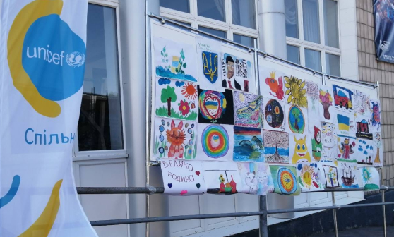
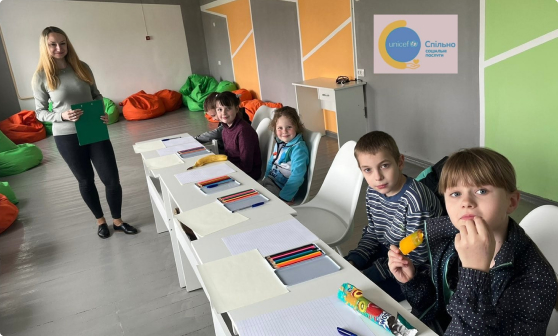
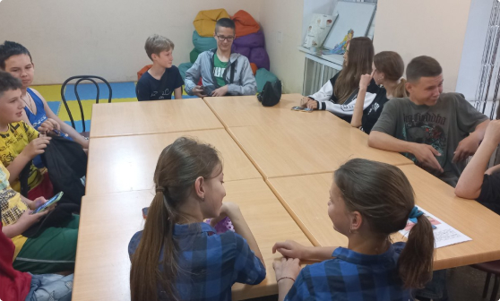
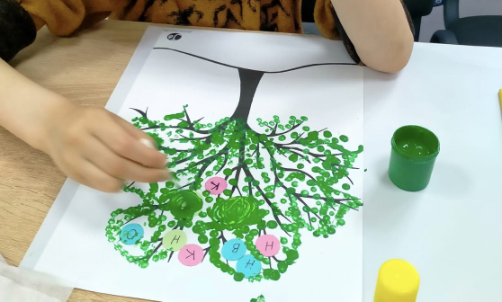

Новини
Щасливі діти не тільки в День захисту дітей
-

Щасливі діти не тільки в День захисту дітей
Щасливі діти - це те що б хотілося бачити кожного дня, і не лише в День захисту дітей!
Команда дитячої точки та мобільної команд проєкту СПІЛЬНО 1 червня організували та провели цікаві ігротеки та виставку дитячих малюнків в м.Пирятин та с. Каплинці.
Проєкт #CПІЛЬНОСоціальніПослуги впроваджується в Пирятинській територіальній громаді Дитячим Фондом ООН (ЮНІСЕФ) UNICEF Ukraine та Консорціумом партнерських організацій за фінансової підтримки Федерального міністерства економічного співробітництва та розвитку через Німецький банк розвитку (KfW). В Консорціум входять: Українська мережа за права дитини Partnership for Every Child / Кожній дитині СОС Дитячі Містечка Україна Громадська організація "Дніпровська ліга соціальних працівників" Громадська організація «Всеукраїнська організація "Клас"» ГО "Соціальна Синергія"
01.06.2023
Читати більше -

Вітаємо зі святом дитинства!
Дорогі наші діти! Від команди працівників Проєкту СПІЛЬНО - Соціальні послуги для сімей у громаді м. Полтава хочемо привітати вас зі святом дитинства. Ми радіємо, коли ви приходите на стаціонарну точку, ми раді вас бачити, коли ми приїздимо до вас. У кожного з вас свій характер, свій настрій, свої захоплення та мрії, але ви однаково унікальні кожен по своєму. Бажаємо вам бути тільки щасливими! Бажаємо вам, щоб ваші дитячі мрії збулися! А ми дорослі будемо оберігати ваше дитинство.
31.05.2023
Читати більше -

Заняття для підлітків на тему «Соціальна справедливість»
Цими вихідними в рамках курсу з громадянської освіти пройшли заняття на тему : «Соціальна справедливість» Підлітки мали змогу розібратися що таке соціальні ролі, класи та статус. Також дізнались про історичні типи соціальної стратифікації. Також обговорили стереотипи пов’язані з соціальними класами, та яким чином ці стереотипи приводять до дискримінації певних соціальних груп. Аня: «Я і не думала що маю так багато стереотипів, цікаво дізнаватись, щоб змінюватись» Проєкт реалізовується Громадська організація «Всеукраїнська організація "Клас"» Проєкт втілюється @Національним українським молодіжним об'єднанням (НУМО) за фінансової підтримки terre des hommes. Проєкт прагне об'єднати українські молодіжні центри та молодіжні організації, в досягненні наступної мети: підтримати молодих людей, на яких вплинула війна, в заповненні освітніх прогалин, визначенні майбутніх професійних шляхів та відновленні простору для автономності.
30.05.2023
Читати більше -

Заняття для підлітків на тему «Демократія та її принципи»
Тема від Олени Кривенко, психолога Проєкту СПІЛЬНО - Соціальні послуги для сімей у громаді у м. Полтава "Родинне дерево". Аплікація, як арт-терапія. Діти працювали разом з батьками. І це корисно, цікаво, плідно.
Проєкт #CПІЛЬНОСоціальніПослуги впроваджується в Пирятинській територіальній громаді Дитячим Фондом ООН (ЮНІСЕФ) UNICEF Ukraine та Консорціумом партнерських організацій за фінансової підтримки Федерального міністерства економічного співробітництва та розвитку через Німецький банк розвитку (KfW). В Консорціум входять: Українська мережа за права дитини Partnership for Every Child / Кожній дитині СОС Дитячі Містечка Україна Громадська організація "Дніпровська ліга соціальних працівників" Громадська організація «Всеукраїнська організація "Клас"» ГО "Соціальна Синергія"
23.05.2023
Читати більше